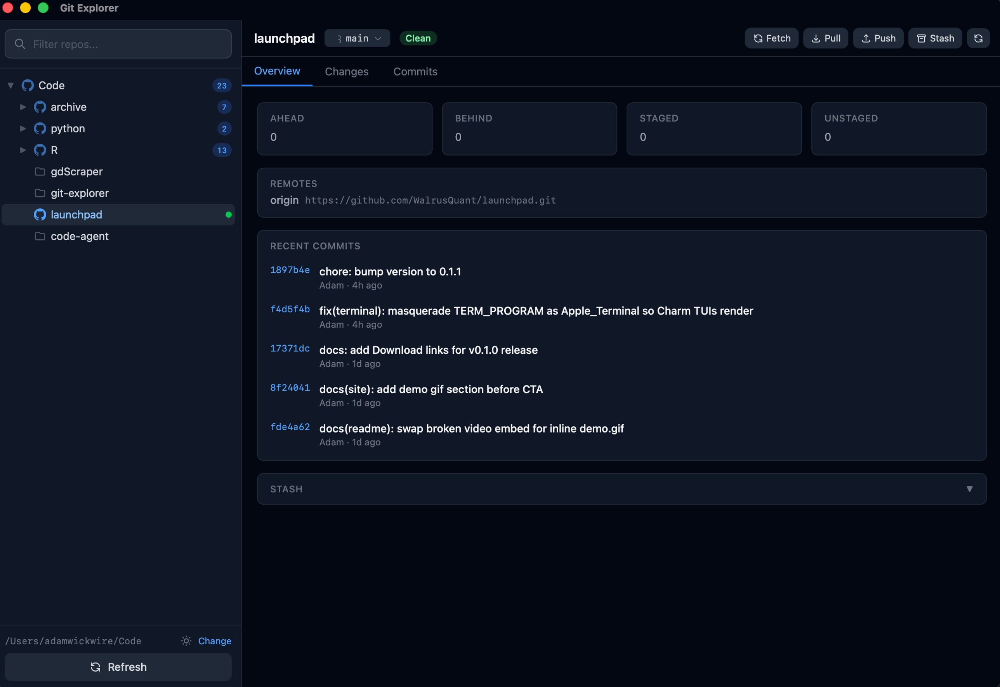
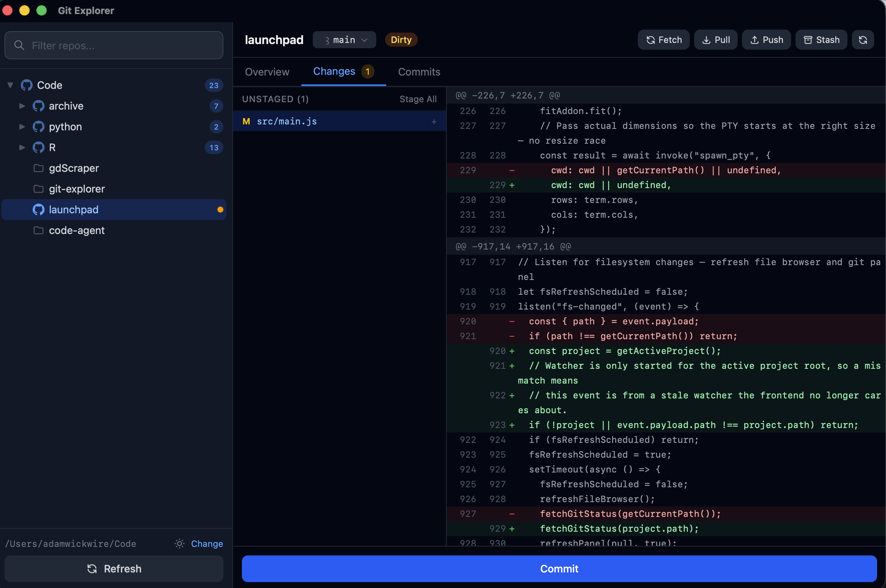

A macOS desktop app that turns your projects folder into a navigable tree of git repos, with status, diffs, and one-click staging.
/Applications and choose Open — just once.

A single window for every repo in your projects folder. No tabs, no context switching.
Every repo's clean, dirty, ahead, behind, or diverged state surfaces as a colored dot in the tree.
Inspect what changed line-by-line before you commit. Staged and unstaged sections side by side.
Stage, unstage, or discard files individually or in bulk. Commit with ⌘↵.
List local and remote branches, create new ones, check out, delete, or merge — without leaving the app.
Network operations use your system git so SSH agents, credential helpers, and 2FA all just work.
Save, apply, pop, or drop stashes from a panel that doesn't pretend they don't exist.

The changes view: staged and unstaged files with hunk-level diffs.